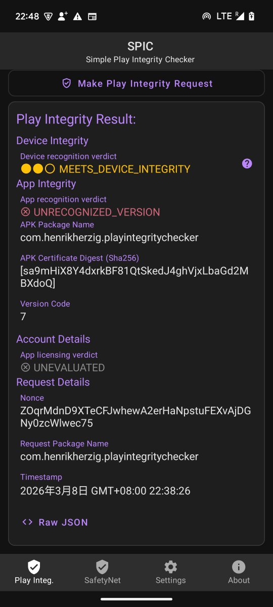
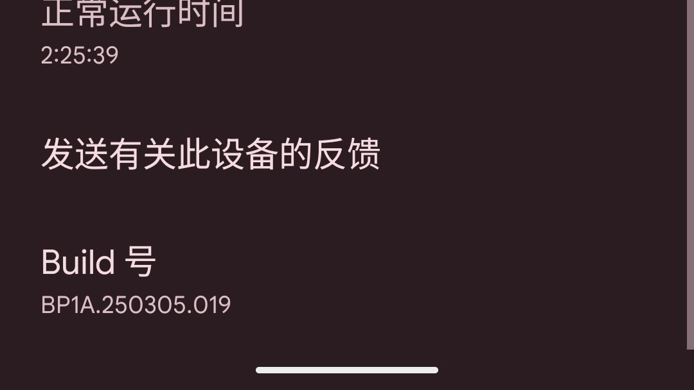

@llsswssw3243 @ForsakenDreamm 破案了，是版本“过旧”
也就是说，就算是原生安卓，系统也必须在一年内有过一次安全补丁更新
完全不知道 X 比银行还严格的发帖检查机制有什么意义😅
另外，苹果确实又赢了

也就是说，就算是原生安卓，系统也必须在一年内有过一次安全补丁更新
完全不知道 X 比银行还严格的发帖检查机制有什么意义😅
另外，苹果确实又赢了


破案了，是 build 号的问题
现在安卓端 X 要求 Play Integrity 为 MEETS_STRONG_INTEGRITY 才能发推，其中一个要求是必须在 1 年以内，而我的 build 号刚好超过了一年
是的，X 对设备的要求比银行支付都高😅 https://t.co/mxnNosAK2q https://t.co/Yzxw1kpg0T
现在安卓端 X 要求 Play Integrity 为 MEETS_STRONG_INTEGRITY 才能发推，其中一个要求是必须在 1 年以内，而我的 build 号刚好超过了一年
是的，X 对设备的要求比银行支付都高😅 https://t.co/mxnNosAK2q https://t.co/Yzxw1kpg0T